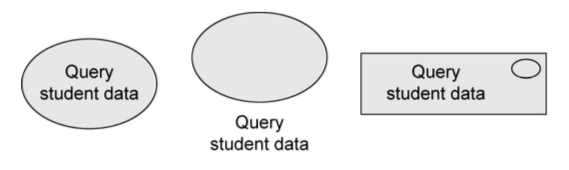

Requirements engineering with UML
What is UML?
A unified modeling language, the defacto standard for software design.
pros:
-
not tied to a development process
-
can be used across the whole life cycle
-
general purpose, can model all sorts of shit
-
has different representations (graphical, but also text)
main characteristics:
-
comprehensive: can describe all parts of a system
-
scalable: "zoom in" and add more details if you want
-
originally intended for descriptive models
-
now also supports prescriptive models
formal modeling language — its core concepts have a well-defined meaning
UML model is represented graphically with diagrams
The different types:
The ones we will use:
-
use case diagram: to specify the basic functionality of a software system (requirements)
-
class diagram: to define data structures within the system
-
state machine diagram: to define intra-object behavior
-
sequence diagram: to specify inter-object behavior and communication
a UML model contains everything related to the system. a diagram is just a "window" on the model (shows some parts, but not necessarily everything).
Requirements engineering
the process of establishing:
-
features that a system should and will have
-
constraints under which it operates and is developed
requirement can range between:
-
high-level abstract statement of a feature
-
detailed mathematical functional specification
functional (what) vs non-functional (how) requirements
-
functional: services the system should provide, how it should react to inputs, how it should behave in specific situations, opt. what it shouldn't do.
-
precise — ambiguous requirements may be interpreted in different ways by developers and users
-
complete — they should include descriptions of all facilities required
-
consistent — there should be no conflicts or contradictions in descriptions of system facilities
-
verifiable — requirements should be directly mapped to parts of system
-
non-functional: constraints on services/functions offered by the system, often apply to system as a whole instead of individual features/services
-
system properties and constraints (e.g. reliability, response time, storage requirements)
-
may be more critical than functional, like safety requirements
-
may affect overall architecture of a system instead of individual components (like organization to minimize communications between robots)
-
different types:

in UML: use case diagrams for functional requirements.
How to write requirements specifications:
|
Notation
|
Description
|
|
Natural language
|
Use numbered sentences in natural language. Each sentence is one requirement.
|
|
Structured natural language.
|
Requirements are written in natural language on standard form/template. Each field gives info about an aspect of the requirement.
|
|
Design description languages
|
Use language like programming language, but with more abstract features specifying requirements by defining an operational model of the system.
|
|
Graphical notations
|
Graphical models with text annotations. e.g. UML use case and sequence diagrams.
|
|
Mathematical specifications
|
Based on math concepts like finite-state machines or sets. Most customers don't understand this so not often used.
|
Natural language specification
requirements are written as natural language sentences. used because it's expressive, intuitive, universal, easily understood by customers.
guidelines:
-
invent a standard format, use it for all requirements.
-
use language in a consistent way ("shall" for mandatory requirements, "should" for desirable requirements)
-
highlight text to identify important parts of requirement
-
avoid use of computer jargon
-
include explanation (rationale) of why a requirement is needed
Use case diagrams
express expectations of customers/stakeholders.
answers questions:
-
what is being described? (the system)
-
who interacts with the system? (the actors)
-
what can the actors do? (use cases)
use case:
-
describes functionality expected from system under development
-
set of all use cases describes functionality that a system shall provide.
-
notations:

actors:
-
interact with the system by using use cases, or by being used by use cases.
-
represent roles that users adopt (users can have multiple roles)
-
not part of the system, so outside of system boundaries.
-
human or non-human
-
primary/secondary:
-
if primary, has main benefit of execution of use case.
-
if secondary, receives no direct benefit.
-
active or passive
-
active: initiates execution of the use case
-
passive: provides functionality for the execution of the use case

relationships between use cases and actors:
-
actors are connected with use cases via associations (solid lines)
-
every actors has to communicate with at least one use case
-
association is always binary, multiplicities can be specified

relationships between use cases:
-
«include»
-
behavior of one use case ('included') is always integrated in the behavior of another use case ('base')

-
«extend»
-
behavior of one use case ('extending') may be integrated in behavior of another use case ('base')
-
both use cases can also be executed independently of each other
-
extension points are written directly in the use case. you can specify multiple extension points.

-
generalization of use cases
-
if use case A generalizes use case B, then B inherits behavior of A and may extend/overwrite it. B also inherits all relationships form A.
-
A may be labeled {abstract} — cannot be executed directly, only B is executable

relationships between actors
-
generalization
-
actor A inherits from actor B. e.g. A can communicate with X and Y, B can only communicate with Y.
-
abstract actors are possible
Description of use cases:
-
Name
-
Short description
-
Precondition: prerequisite for successful execution
-
Postcondition: system state after successful execution
-
Error situations: errors relevant to problem domain
-
System state on occurrence of an error
-
Actors that communicate with the use case
-
Trigger: events which initiate the use case
-
Standard process: individual steps to be taken
-
Alternative processes: deviations from the standard process
Remember, it's an abstraction. Many small use cases with the same objective should be grouped. Don't decompose functionality into use cases.
Summary of notation